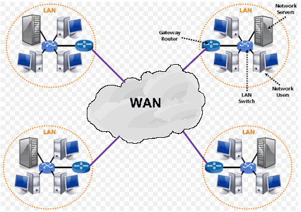

a.LAN

b.MAN

c.WAN
Os cabos de rede são utilizados para transmitir dados entre dispositivos em uma rede de computadores. Switches, roteadores e servidores são exemplos de dispositivos fundamentais para o funcionamento de redes locais (LAN), redes metropolitanas (MAN) e até redes de longa distância (WAN).
a.LAN
b.MAN
c.WAN
Ao longo do tempo, diferentes tipos de cabos de rede foram desenvolvidos para atender às necessidades crescentes de desempenho e confiabilidade. Alguns cabos são mais simples e econômicos, indicados para pequenas redes locais, enquanto outros são mais avançados e utilizados em grandes estruturas que exigem alta velocidade e longas distâncias de transmissão. Existem diferentes tipos de cabos de rede, cada um com características próprias, como velocidade, alcance, custo e resistência a interferências.
Um dos mais utilizados atualmente é o cabo de par trançado. Ele é composto por pares de fios de cobre entrelaçados, o que ajuda a reduzir interferências eletromagnéticas. Possui versões UTP e STP e várias categorias, como Cat5e e Cat6.

Utilizado principalmente em redes mais antigas e sistemas de TV a cabo. Possui um condutor central, isolante, blindagem metálica e capa externa.

A fibra óptica é o tipo de cabo mais moderno. Ela transmite dados por meio de pulsos de luz, oferecendo altíssima velocidade, grande alcance e imunidade total a interferências eletromagnéticas. É amplamente usada por provedores de internet e em grandes infraestruturas de rede.